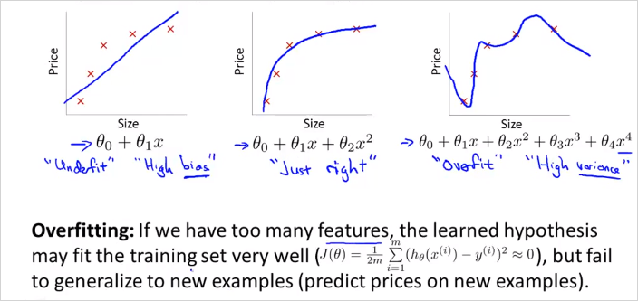
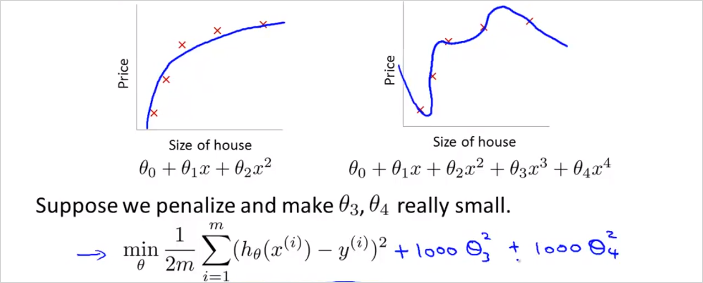
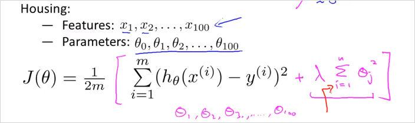
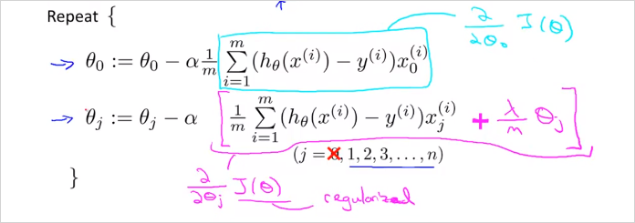
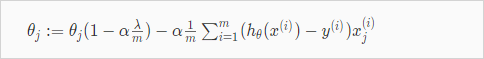
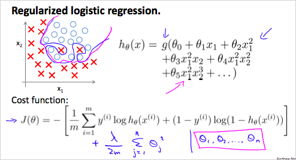
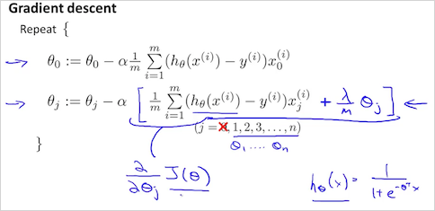

3.2. Overfitting problem
3.2.1. Overfitting 이란?

Feature를 많이 둘 수록 Training data을 더 정확히 모사할 수 있다. 하지만 가설함수가 너무 Training data에만 적합해서 Training data는 거의 정확하게 예측하지만 새로 들어온 데이터에 대해서는 예측을 못하는 문제가 발생할수 있다. 해당 가설함수로 문제를 일반화(generalize)하는것을 실패함. 그림맨 왼쪽은 Underfit (high bias, preconception 이라고도 표현할수 있음), 오른쪽이 Overfit, 가운데가 적합함. 강의 뒷편에서 학습알고리즘이 Overfitting인지 아닌지 분석하는 툴에대해 살펴볼 것이다.
Feature가 너무 많을때 Overfitting이 발생할 수 있다. 해결책은 크게 두가지이다.
1) Reduce the number of features:
- Manually select which features to keep.
- Use a model selection algorithm (studied later in the course).
2) Regularization
- Keep all the features, but reduce the magnitude of parameters
- Regularization works well when we have a lot of slightly useful features.
이번 장에서 다룰 내용
3.2.2. Cost function

Regularization 은 이렇게 cost function 에 특정에 큰 가중치를 부여(패널티 부여)해서 최종적으로 의 크기를 0에 가깝게 만드는것이다. 이렇게하면 4차 함수를 쓰더라도 2차함수 모델에 근접하게 만들 수 있다.

그렇다면 어떤 를 선택해서 Regularization할 것인가? 우리는 어떤게 맞는지 알수없다. 그래서 다음의 공식으로 모든 parameter 에 대해서 값을 줄여(shrink)서 cost function값을 확인해 보는 것이다. 의 공식에 부분이 추가된다.
In regularized linear regression, we choose to minimize:
The is the regularization parameter. It determines how much the costs of our theta parameters are inflated. 어떤 를 적용 했을때, 모든 에대해서 가장 cost function이 작아지는지 확인? 어떤 feature에 대한 parameter 가 있을때 그 파라미터에대해서 를 구해보면, 왼쪽항은 줄어들지만, 람다항 은 커진다. 이 둘의 조합을 통해 결국 가장 작은 값을 갖는 를 찾으면 overfitting을 방지한 값을 찾을 수 있을 것이다. 가 또 너무 커도 Underfitting이 발생할 수도 있음에 주의해야 한다.
3.2.3. Regularized Linear Regression
Overfitting 을 피하기 위해서 Linear Regression 에서 Regularized하는 방법에 대해 알아보자. Regularized 를 Gradient descent 알고리즘에 적용하면 다음과 같다. 인 경우는 seperated 되었다는점에 주의 (어차피 1이기 때문이다.)

분홍색 부분은 를 편미분한 도함수이다. 증명은 생략한다.
항을 모아서 쓰면 다음과 같다.

항(term)은 흥미로운 영향을 준다. 이다. 그리고 자체를 약간 줄인다. 그 우측 항은 기존 gradient descent 와 동일하다.
Normal Equation 은 어떻게 적용할 수있는지 살펴보자. 간단하다 공식은 아래와 같다. L matrix 크기는 (n+1) x (n+1) 이다. (n:feature갯수)
3.2.4. Regularized Logistic Regression
Overfitting 을 피하기 위해서 Logistic Regression 에서 Regularized하는 방법에 대해 알아보자.

가 위와 같을때 Decision boundary는 매우 복잡할 것이고 trainig set에는 매우 적합하지만 새로운 데이터에는 과적합(Overfit) 하다. 따라서 Regularized 된 cost function 는 위와 같다. 기존의 에서 람다 항이 추가되었다. 이것을 가지고 Gradient descent 알고리즘에 적용하면 다음과 같다.

함수의 형태가 linear regression과 다름에 유의.